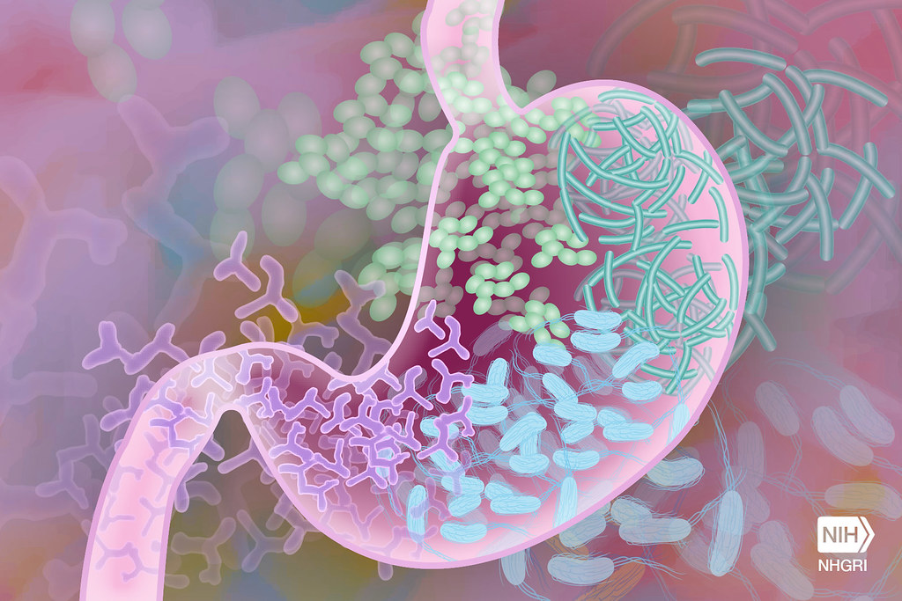
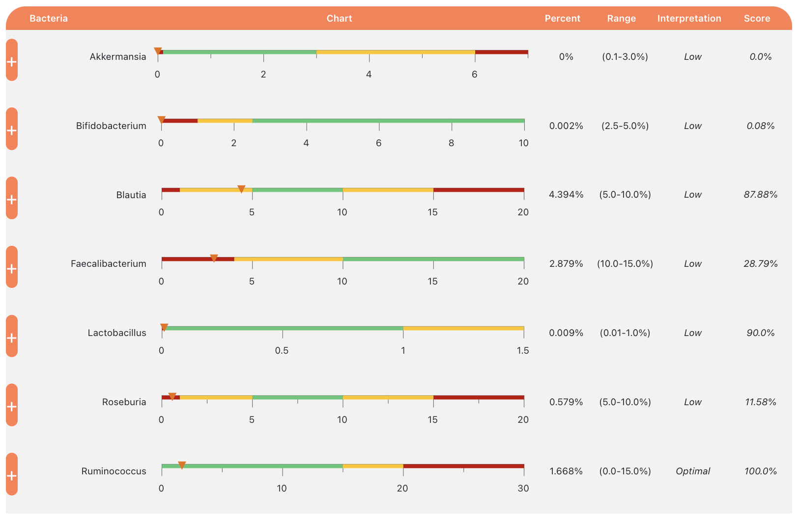

When I got infected with Covid this May, I told myself, I probably won’t get Long Covid.
At that point in the pandemic, Long Covid was what I was afraid of. After all, as a generally-healthy, triple-vaccinated person, I didn’t have to be too worried about severe acute illness or death. It was the one in five chance of not recovering — and the possibility of becoming disabled — that scared me.
But I reassured myself that at least I was lucky to not have known risk factors: I wasn’t unvaccinated, female, or diabetic. In my teenage years, I had avoided contracting a virus like the one that causes mono, which Covid can reactivate even years later.
Not only that, I probably got a reduced viral load due to wearing my KN95 mask, and I managed to get access to a full course of the antiviral medication Paxlovid, which current research says slightly reduces the chance of Long Covid.
But months later, here I am, sick and disabled with the very condition I tried so hard to avoid.
Herein lies a puzzle: was it pure bad luck? Or was there something about my otherwise-good health that could’ve contributed to my developing a debilitating medical condition? This is an important question — not as a matter of self-blame, but because I know firsthand that the Covid pandemic is not over, no matter what President Biden has said. As long as I can get reinfected, my Long Covid could get worse, or I could recover and get it again.
Enter, the Dysbiosis Hypothesis
I may never know exactly why I got Long Covid, but I’ve read enough science to have a hypothesis. It has to do with my gut microbiome.
Today, researchers know that the gut microbiome — the collection of trillions of microbes and bacteria living inside of the human gut — plays a major role in our overall health and well-being. An estimated 70-80% of the human immune system is located in the gut. And beyond the immune system, it also influences countless other aspects of our health, such as our mood, nervous system, and weight.

Studies have shown that patients with Long Covid are much more likely to have dysbiosis, a disrupted and out-of-balance gut microbiome, than patients who have recovered from Covid more quickly. For instance, one study found that Long Covid patients specifically tend to have less concentration of Bifidobacterium pseudocatenulatum and Faecalibacterium prausnitzii, beneficial bacteria species linked to better immunity.
In the nine months before my infection, I unfortunately had to take several rounds of antibiotics. Five, in fact: two for tonsillitis, one for strep throat, one for gonorrhea, and one after I was so tired of tonsil problems that I got them removed. With so much antibiotic usage in so short a period of time, it’d be surprising if my gut microbiome wasn’t out of balance. Sadly, I didn’t have too much of a choice. Antibiotics are prescribed so often because they work.
In short, my dysbiosis hypothesis is this: my gut microbiome hadn’t yet healed from several rounds of antibiotics, and Long Covid resulted from the virus taking advantage of my temporarily vulnerable gut. Taken further, the virus might even have found a way to take up residence in the relatively hospitable environment that is the gut. The virus and viral fragments have been found within the gut tissue of infected people, which is one reason why viral persistence has become a prevailing theory of why some people suffer from Long Covid.
Data
Suspecting dysbiosis, I ordered a commercial microbiome test from the company Ombre to better understand the health of my gut microbiome.
The test cost $100 and was surprisingly easy to self-administer. Describing the process would be more graphic than I care to do online, but let’s just say it involved a swab, a test tube, and used toilet paper. I sent in my sample and got my results back within two weeks.

Shown above are estimated concentrations of my good bacterial genera from my sample. Of seven measured genera, the free-of-cost analysis by Biomesight categorized me as “low” on six. Two in particular — Akkermansia (which plays a role in strengthening the gut lining to prevent leakage) and Bifidobacterium (which plays a role in modulating the body’s immune responses) — appeared nonexistent or nearly so, at estimated concentrations of 0.000% and 0.002% respectively.
Yikes!
How about the two beneficial strains in the aforementioned study on patients with Long Covid? Well, Faecalibacterium prausnitzii was detected at the low concentration of 2.879% and Bifidobacterium pseudocatenulatum was not detected at all.
Double yikes!
Not shown are the concentrations of my bad bacterial genera, mostly because they also appeared low. That was good news, at least.
Now, I don’t know how accurate these commercial tests are, or what research may back the presented interval ranges, but between my antibiotic history and these results, it feels safe to say that I am currently experiencing some form of dysbiosis. With low levels of important beneficial bacteria, I’d guess that my gut is (still) vulnerable to opportunistic infections. Rebuilding these populations seems to me a no-brainer in my journey to restored health — and perhaps even toward full recovery.
What I’m trying
Many (but not all) of the interventions below are suggested by the pioneering research of Stanford microbiologists Erica and Justin Sonnenburg. They detail some of them in their published book, The Good Gut, and another is suggested by a recent study they collaborated on showing durable benefits to the microbiome as a result of increased fermented food intake.
Eating several servings of fermented food every day. For me, this includes a daily glass of homemade kefir, a fermented milk drink similar to yogurt, as well more kimchi, sauerkraut, and miso in general.
Eating a wider range of fruits and vegetables, and eating less red meat. Especially foods that are vibrant and colorful.
Supplementing with probiotics and prebiotics. For example, Garden of Life has several formulations of probiotics (live good bacteria) containing high Bifido counts, as well as prebiotics (which help good bacterial populations thrive).
Spending time in nature and with dogs, when I can. Both are good ways to expose myself to healthy bacteria, and good for my mental health, too. Since I live in DC, this sometimes means dogs and Rock Creek Park!
Drinking more bone broth. Not mentioned by the Sonnenbergs, but is nonetheless supposedly helpful for repairing the lining of the gut.
Outside of my early Paxlovid course, I haven’t tried any antivirals that might combat viral persistence, should viral persistence explain my condition, though perhaps I will in the future.
In the future, I may also see if an integrative medicine doctor can offer me more targeted guidance.
How it’s going
I’ve made these changes to my diet for roughly three months, now. And so far, so good!
My appreciation for fermented foods has definitely grown. I’m craving the tangy flavor of fermented food more than ever before. I especially think my life has been improved by the addition of homemade kefir, which I tell my friends is “the champagne of milk” for it’s fun, luscious fizziness.
As for the cheapest way to assess my gut health from week to week, you’ll just have to trust me when I say that my stool frequency and consistency have improved, too. Google “Bristol Stool Chart,” if you’re interested in more on that. It’s a real medical tool.
Beyond that, I plan to retake the Ombre test in another month or two for comparison.
Disclaimer
I’m not a medical professional. Before introducing fermented food or probiotics into your diet, you might consider consulting with an experienced doctor. For example, fermented food is high in histamine, which some people with Long Covid cannot tolerate. And caution with probiotics could be warranted for those who are immunocompromised or taking immunosuppresants.
Also, I have no affiliation with Ombre or Biomesight.